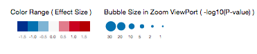

Gene eQTL Visualizer (GEV) is a web-driven visualization tool that visually summarizes the eQTL results of a single query gene in a heat map.
The columns are SNPs, by default, sorted by chromosome positions, rows are tissues in alphabetical order. Only SNPs and tissues that have eQTLs
associated with the query gene are reported in the heat map, thus each gene's heat map dimensions varies.
When an eQTL is present in a tissue and of a SNP, it appears as a circle on the heat map.
The Zoom Lens and Viewport
GEV attempts to fit the entire heat map into the browser window,
so that one can observe global trends and patterns without scrolling. However, the trade-off is that the heat map can become too small
to allow closer examination.
Therefore, a shaded box that serves as a zoom lens is provided on the heat map and shows a partial region of the map in the zoom viewport.
One can browse the heat map in the zoom viewport by
dragging the zoom lens along the heat map, or click anywhere of interest on the heat map. The area of the zoom lens can be modified by dragging
the vertical edges of the rectangle box,
which essentially changes the width of the zoom viewport.
The Info Panel
In the info panel, the basic information of the query gene is provided. Links to the gene page and eQTL IGV browser are also conveniently provided.
To view the eQTL results of a different gene, use the search box to fetch the gene of interest by gene symbol or ENSEMBL ID.
The Color and Bubble Size Scales
Two visual properties of the circle, color and size, are used to represent the NES (normalized effect size) and p-value of the eQTL results, respectively.
The color and size scales are global, which means that the Gene eQTL Visualizer uses the same scales to render results from all genes.
The size scale legend refers to the heat map in the zoomed viewport.

Filtering By P-Value or Effect Size
The tissue menu can be summoned by clicking the button located at the upper left corner in the GEV. One can custom-select tissues to view in the heat map.
The Tissue Selection Menu
The tissue menu can be summoned by clicking the button located at the upper left corner in the GEV. One can custom-select tissues to view in the heat map.